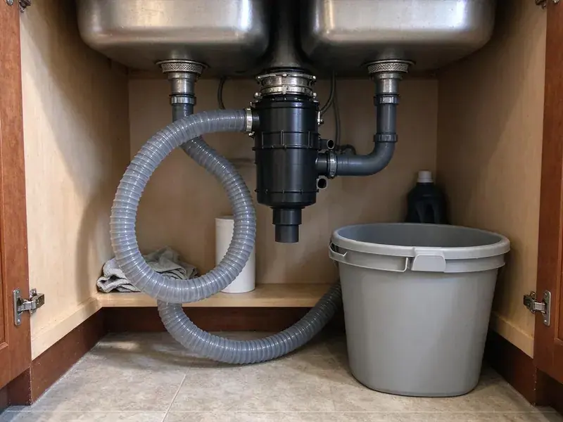

Garbage Disposal Repair in Des Moines, IA
KFR Plumbing fixes InSinkErator, Waste King, Moen and other disposals in Des Moines, IA homes with straight repair-or-replace advice.
- All Major Brands Serviced
- All Brands Serviced
- Warrantied Work
- Quick Local Service

Need Garbage Disposal Repair Experts in Des Moines, IA.
Our certified plumbers are ready to diagnose and fix any disposal issue you're facing.
Expert Garbage Disposal Repair in Des Moines, IA
KFR Plumbing provides comprehensive garbage disposal repair services throughout Des Moines, IA. From mysterious humming sounds to complete breakdowns, our experienced plumbers have the tools and expertise to diagnose and fix the problem quickly, often on the same visit. We understand how essential a working disposal is for daily kitchen tasks.
Our expertise includes:
- Clearing stubborn jams and restoring impeller function.
- Diagnosing motor failures and electrical issues accurately.
- Repair or replace faulty disposal motors.

Additional Kitchen Plumbing Services in Des Moines, IA
Our kitchen plumbing services in Des Moines, IA cover sinks, disposals, dishwashers, and grease traps so your kitchen keeps running without backups or leaks.


Customers
Why Choose KFR Plumbing for Garbage Disposal Repair in Des Moines, IA?
A broken disposal can back up the kitchen sink and the dishwasher. Fast repair keeps your kitchen usable and prevents water damage under the cabinet.
- Fast Response, We offer quick scheduling for disposal repairs, getting to your home when you need us most.
- Brand Knowledge, We repair InSinkErator, Waste King, Moen, GE and other brands.
- Experienced Plumbers, Our technicians are trained to service all major garbage disposal brands and models, ensuring a precise repair.
Citywide Coverage
Our plumbers serve every neighborhood in Des Moines for disposal jams, leaks and electrical issues. We carry common parts so repairs are done in one trip.
Experienced Team
Each KFR Plumbing technician is thoroughly trained in diagnosing and repairing garbage disposals, ensuring they can tackle any problem effectively. Their expertise means a reliable, long-lasting repair for your kitchen.
Safety-First Approach
We always cut power at the switch or breaker before working inside a disposal. Hands never go into the grinding chamber, and we use the right tools to free jams.
Trusted Certified Des Moines Plumbing Services Professionals
At KFR Plumbing, we take pride in providing certified plumbing services throughout Des Moines, IA. Backed by leading industry credentials, our experienced plumbers combine technical skill with genuine customer care. Whether it is repair, installation, or maintenance, we follow strict safety and quality standards to deliver lasting results you can trust.
Call Us Now PHCC Plumbing Contractor Recognition
PHCC Plumbing Contractor Recognition Better Business Bureau (BBB) Accreditation
Better Business Bureau (BBB) Accreditation Angi Certified Pro
Angi Certified Pro ISO 9001 Quality Management Certification
ISO 9001 Quality Management CertificationReliable Garbage Disposal Repair Services in Des Moines, IA
Preventative Maintenance and Longevity Tips in Des Moines, IA
Beyond repairs, KFR Plumbing also offers advice on preventative maintenance for your garbage disposal in Des Moines, IA. We can inspect your unit for early signs of wear and tear, recommend proper usage habits, and suggest products to keep it running smoothly. This proactive approach helps extend the lifespan of your disposal and avoids costly future repairs, saving you time and money.

Disposal Reset and Electrical Repair in Des Moines
When a disposal will not turn on at all, the thermal overload may have tripped or the switch may be bad. We check the reset button, breaker, wall switch and wiring. Air switches and batch-feed lids are tested too. Most electrical issues are simple to fix once found.
Leaking Disposal Repair in Des Moines, IA
Leaks can come from the sink flange, the dishwasher inlet, the discharge tube or the disposal body itself. We trace the leak, reseal the flange with plumber's putty, and replace gaskets or tubes when needed. A leak from the bottom of the unit usually means the internal seal has failed. In that case, replacement is the better option.
Noisy Garbage Disposal Repair in Des Moines
Unusual noises from your garbage disposal, such as grinding, rattling, or humming, point to internal issues. This could be a loose impeller, a foreign object caught inside, or even motor bearing problems. Our technicians accurately diagnose the source of the noise and perform the necessary repairs to restore quiet operation to your kitchen in Des Moines.
Disposal Odor and Buildup Cleaning in Des Moines, IA
Food buildup and grease in the chamber and baffle create odors. Water across much of Iowa comes from groundwater and runs very hard, so scale buildup in water heaters and fixtures is common. Mineral scale can trap food particles and make smells worse. We clean the splash guard and chamber and check the drain for buildup. Replacing a worn splash guard usually helps control smell.
Noisy or Grinding Disposal Repair in Des Moines
Loud metal-on-metal sounds may mean a loose mount, a foreign object or worn impellers. We inspect the chamber, tighten the mounting ring and remove debris. If the bearings are failing, the noise will continue. In that case, we can quote a quieter replacement unit.
Leak Detection and Repair in Des Moines, IA
Leaks from your garbage disposal can lead to serious water damage under your sink or even affect your cabinets. Whether the leak is from a loose connection, a cracked housing, or a faulty seal, our plumbers in Des Moines, IA track down the source. We use high-quality sealants and replacement parts to stop leaks effectively, preventing further moisture problems and potential mold growth in your kitchen.

Emergency Garbage Disposal Repair in Des Moines, IA
A completely non-functional or severely leaking garbage disposal can be an emergency. KFR Plumbing offers emergency repair services in Des Moines, IA to address urgent disposal issues fast. We understand that some problems can't wait, and our fast response team is available to restore your disposal's function, preventing further damage or inconvenience outside of regular business hours.
Garbage Disposal Repair Near Me in Des Moines, IA
When your disposal quits, you want a plumber close by. Our team works in Des Moines every day and can usually arrive the same day. We bring common parts and replacement units in case they are needed.
We are committed to serving every corner of Des Moines, making professional garbage disposal repair accessible to everyone. Our local service means we understand the plumbing needs of homes in the area and can arrive promptly, fully equipped to resolve your disposal issues.
KFR Plumbing at a Glance
- Licensed and insured plumbers serving Des Moines, IA
- 24/7 emergency service with same-day scheduling
- Upfront, flat-rate pricing before work begins
- 4.8-star rated by 620+ Iowa customers
Des Moines Map
Des Moines Information
- Population
- 210,381
- Area codes
- 515/641/402
- Service area
- Des Moines and communities within 40 miles
- Nearby
- West Des Moines, Urbandale, Ankeny, Waukee
For homes in Des Moines, IA, regular garbage disposal maintenance and timely repairs matter over the life of the unit. Water across much of Iowa comes from groundwater and runs hard to very hard, so scale buildup in water heaters and fixtures is common.
Expert Services
Trust our professionals for reliable KFR Plumbing solutions in Des Moines, IA.
Our Specialized Plumbing Services in Des Moines, IA
At KFR Plumbing, we provide a complete range of plumbing services across Des Moines, IA. From leak detection to full system installations, our team ensures fast, precise, and affordable service for both residential and commercial properties. Explore our core services below:


How Our Garbage Disposal Repair Process Works in Des Moines, IA
We make disposal repair fast and easy.
Request a Quote
Call (515) 308-3583 and describe what your disposal is doing. We schedule a time, usually the same day.
Diagnose the Issue
Your plumber checks for jams, leaks, electrical problems and drain clogs. You get a flat-rate price before we start.
Repair and Test
We fix the problem and run the disposal with water to confirm it works. We check for leaks and clean up before leaving.
Frequently Asked Questions About Garbage Disposal Repair in Des Moines
The cost of garbage disposal repair in Des Moines, IA can range from $100 to $300, depending on the issue. Simple fixes like resetting the unit or clearing minor jams are on the lower end, while motor repairs or replacing complex parts will be more expensive. We provide a firm estimate after diagnosing the problem.
If your garbage disposal is found to be beyond economical repair, our plumber will provide options for a new garbage disposal installation. We can help you choose a good replacement unit that meets your needs and budget, and then professionally install it.
To prevent future problems, avoid putting grease, coffee grounds, eggshells, fibrous vegetables, or large bones down the disposal. Always run cold water before, during, and after use for at least 30 seconds. Regularly grind citrus peels to help clean and deodorize the unit.
Frequent jams, constant resets, leaks from the body, loud grinding and age over ten years are signs replacement is the smarter choice.
If your garbage disposal is more than 10 years old, frequently leaks, or requires costly motor repairs, replacement might be more cost-effective in the long run. We'll provide an honest assessment of your unit's condition and help you decide if repair or replacement is the best option for your Des Moines home.
A leak from the bottom usually means the internal seal has failed. This generally cannot be repaired, and the unit needs replacing.
Generally, minor garbage disposal repairs do not require a permit in Des Moines. However, if the repair involves significant alterations to the plumbing system or electrical wiring, a permit might be necessary. Our plumbers are knowledgeable about local codes and will let you know if a permit is required.
The reset button protects the motor from overheating. If it trips often, the unit may be overloaded, jammed or failing.
What People Are Saying About Our Plumbing Experts?

Robert G.
The trenchless sewer replacement saved our front yard. They walked us through the camera inspection footage first so we knew exactly what we were paying for.
Sewer Line Replacement · Ames, IA
Patricia H.
We had a slab leak that two other companies could not find. KFR Plumbing located it in under an hour, explained our options, and the price matched the quote to the dollar.
Slab Leak Repair · Urbandale, IA
Emily R.
I called KFR Plumbing for plumbing repair, and the technician was fast, polite, and thorough. They explained the problem clearly and fixed it the same day. I will definitely hire them again. Highly recommended!
Plumbing Repair · Waukee, IA
Mark T.
When our office needed drain cleaning, KFR Plumbing provided quick, reliable service. The plumber arrived on time and made sure every drain flowed perfectly before leaving. Very satisfied.
Drain Cleaning · Urbandale, IA
Sofia M.
Two new toilets installed in one visit, no mess left behind, and the tech even adjusted a faucet he noticed was dripping. Fair pricing and really friendly.
Toilet Installation · Urbandale, IAJames P.
Our commercial plumbing system had a leak under the sink, and KFR Plumbing handled it professionally. The plumbers arrived quickly and restored everything without disruption to our customers.
Commercial Plumbing · Waukee, IA